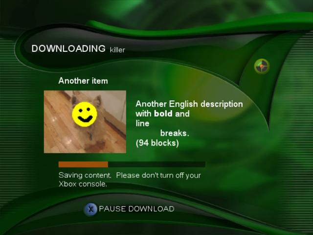
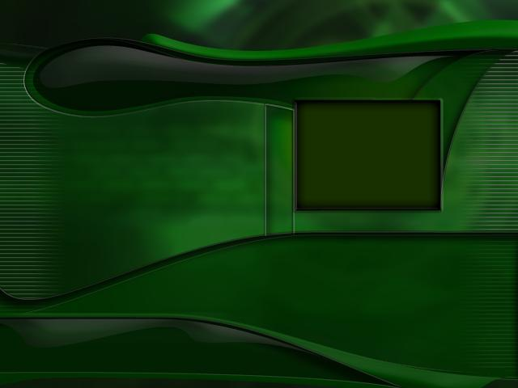

The Xbox Content Download Manager is an XBE that can be added to a game title to enable users to download new content through the Xbox Live service. The executable, called Downloader.xbe, handles all the details of connecting to the Xbox Live service, including account creation, authentication, content enumeration, purchases, and content download. Downloader.xbe supports both free and premium (for fee) content. Downloader.xbe is pre-certified, so including Downloader with a game does not require that the game itself support online gameplay or the Technical Certification Requirements (TCR) of an Xbox Live game.
The Content Download Manager user interface appears as follows:

Main screen

Sign-in screen

Purchase screen

Download screen
The Downloader interface is skinnable, enabling you to replace the background images with your own custom graphics that better match the visual style of your game title.
Note You cannot change the font or color of the text displayed by Downloader.
The Xbox SDK comes with sample bitmaps for Downloader's default content selection (dlback_content.bmp), message (dlback_main.bmp), and download (dlback_down.bmp) screens. These files are located in the \Program Files\Microsoft Xbox SDK\source\downloader\srcmedia directory. You can use these bitmaps as templates for your own background images. The three bitmaps are shown below:

Content selection screen (dlback_content.bmp)

Message screen (dlback_main.bmp)
Download screen (dlback_down.bmp)
Once you create your own custom bitmap files, use the Bundler tool to compile them into an .xpr file. To do this, first create a resource definition file (a text file called dlcustom.rdf) with the following contents:
Texture TEX_MAIN_BACKGROUND
{
Source srcmedia\dlback_main.bmp
Format D3DFMT_DXT3
Levels 1
}
Texture TEX_CONTENT_BACKGROUND
{
Source srcmedia\dlback_content.bmp
Format D3DFMT_DXT3
Levels 1
}
Texture TEX_USER_BACKGROUND
{
Source srcmedia\dlback_user.bmp
Format D3DFMT_DXT3
Levels 1
}
The Source lines in the .rdf file should specify both the path and file name of the custom bitmaps you have created. To compile the bitmaps into an .xpr file, use the following command line:
bundler dlcustom.rdf -o dlcustom.xpr
Put the dlcustom.xpr file into a top-level directory on your game disc called media. (See the next section for more details about the files that Downloader requires.)
You can skin additional screens by providing your own dlres.xpr file, which is then placed in the downloader media directory. To create dlres.xpr, use the resources included in the directory <XDKDIR>\source\downloader\srcmedia folder, where <XDKDIR> stands for the XDK's root directory.
To use Downloader, your game must do the following.
The game disc containing your game and Downloader must also contain certain other specific files in order for Downloader to work. These files are supplied in the XDK in the c:\Program Files\Microsoft Xbox SDK\redist directory.
The root directory must contain the following files:
In a directory called media, located in the root directory of the disc, place the following files:
Note You must restamp the Downloader.xbe file with your game's Title ID.
Note The Xbox file system can store no more than 4096 files per directory. If the directory receiving packages is already full when Downloader attempts to download a new package, Downloader informs the user that installation of the package failed. If your game title offers more than 4096 content packages, store the extra packages in their own subdiretory.
If a user has already logged onto Xbox Live while your game title is running, Downloader can keep that user logged in. This prevents the user from having to wait to log in again when Downloader starts. To enable this feature, call XOnlineSaveLogonState to retrieve an XONLINE_LOGON_STATE structure. Your game must then pass the structure to Downloader as the LogonState member of an LD_DOWNLOADER structure. The LD_DOWNLOADER structure is passed to Downloader as the pLaunchData parameter to XLaunchNewImage. The following code sample shows how this is done:
XONLINE_LOGON_STATE LogonState;
HRESULT hr;
LD_DOWNLOADER LaunchData;
ZeroMemory(&LaunchData, sizeof(LD_DOWNLOADER));
LaunchData.dwID = LAUNCH_DATA_DOWNLOADER_ID;
//
// Set bit flags
//
LaunchData.dwBitFilter = 0xFFFFFFFF;
//
// Copy logon state
//
hr = XOnlineSaveLogonState(&LogonState);
if (SUCCEEDED(hr)) {
memcpy(&(LaunchData.LogonState), &LogonState, sizeof(XONLINE_LOGON_STATE));
//
// Specify the logon user index into the saved logon state for
// the user we want to automatically log on in Downloader. This
// value can be 0 through 3 and must have valid logon state at it.
//
LaunchData.bPremiumLogonPort = DesiredUserIndex;
}
//
// Copy any game state into the user defined area. This can be
// as big as sizeof(LaunchData.UserDefined)
//
memcpy(&(LaunchData.UserDefined), &GameState, sizeof(GameState));
//
// Launch Downloader
//
XLaunchNewImage("d:\\downloader.xbe", (LAUNCH_DATA*)&LaunchData);
Note The number of users logged in could change while Downloader is running. As a result, be sure your game deals with this situation properly once Downloader returns control to your game's code.
You can preview the display name, description, and image associated with a content package without needing to submit the content to the Xbox Live team for posting to an Xbox Live server. However,
Note You cannot simulate the downloading of content; this preview technique allows you to view only the Downloader information attached to a piece of content.
To preview content in Downloader, create a dlpreview directory on your Xbox Development Kit, located at the same directory level as Downloader.xbe. When Downloader starts, it enumerates subdirectories of the dlpreview directory, looking for enum.bin and details.xpr files in each subdirectory. Downloader displays the image, display name, and description for each pair of content files that it finds.
Note It is the developer's responsibility to ensure that package names and descriptions fit within the allocated space in the Content Download Manager. If a name or description is too long, it is truncated.
To refresh Downloader's display of packages, press A on the game controller. Downloader searches through the dlpreview directory and updates its display according to the contents in the directory at the time that the player presses the A button. You can use this technique to quickly try out new images and text without restarting Downloader each time you copy new content to the Xbox console.